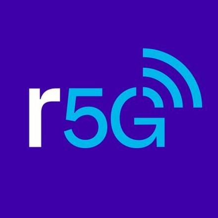

Redacciones5G es el programa de Personal Argentina que acompaña la evolución del periodismo con información, tendencias y herramientas sobre el futuro de los medios, de la mano de la innovación en tecnología. Su propósito es difundir el valor que internet y las nuevas tecnologías digitales aportan al ejercicio periodístico y a la gestión de los medios de comunicación. Fue distinguido con el Premio Gran Amigo de la Prensa que otorga la Sociedad Interamericana de Prensa (SIP).
Premio Gran Amigo de la Prensa
Otorgado por la Sociedad Interamericana de Prensa (SIP) a Redacciones5G por su contribución sostenida a la evolución del periodismo iberoamericano.
Ver el anuncio de la SIPComo parte de sus propuestas de formación, Redacciones5G ofrece capacitaciones gratuitas a medios y redacciones, tanto de manera presencial como virtual. En formato de newsletter mensual y gratuito, compila las experiencias más destacadas en innovación de medios de Argentina y el mundo, reuniendo una comunidad con más de 1.500 suscripciones de líderes de medios en el país y la región.
Con el podcast que lleva su mismo nombre, el programa creó un nuevo espacio en el que amplifica el debate y la reflexión, con entrevistas a protagonistas de la transformación de la actividad periodística. En Argentina, además, realizó encuentros y exposiciones con los más destacados referentes internacionales del periodismo como Martin Baron (ex Washington Post), Rosental Alves (Centro Knight), Andrew Phelps (NYT), Aron Pilhofer (NYT), Amanda Zamora (Texas Tribune), Emilio García Ruiz (Washington Post), Ismael Nafría (La Reinvención del NYT), Eduardo Tessler (Midiamundo), Pepe Cerezo (Evoca Media), y Mario Tascón (Prodigioso Volcán) y Miguel Carvajal Prieto (Universidad Miguel Hernández), entre otros.
Entre los últimos lanzamientos del programa, se destaca esta guía, PeriodismoIA, que brinda toda la información necesaria para la integración de inteligencia artificial a procesos periodísticos y medios. Luego del destacado lugar que la primera versión alcanzó en la industria, en 2026, se publica una versión actualizada con las últimas innovaciones en la materia.
Desde su nacimiento, en 2015, y a raíz de su sostenido crecimiento, Redacciones5G se consolidó como referente en la industria periodística de habla hispana. Hasta el momento, alcanzó a más de 500 medios de Argentina y la región; contribuyó a la formación de más de 10.000 profesionales del periodismo y a más de 5.000 estudiantes de Comunicación y carreras afines en LATAM.
Diez años en cifras
de Argentina y la región iberoamericana
capacitados en innovación periodística
de Comunicación y carreras afines en LATAM
Conocé Redacciones5G
Diez años acompañando la evolución del periodismo de habla hispana con capacitaciones, newsletter y podcast gratuitos.
Visitar el sitio del programa